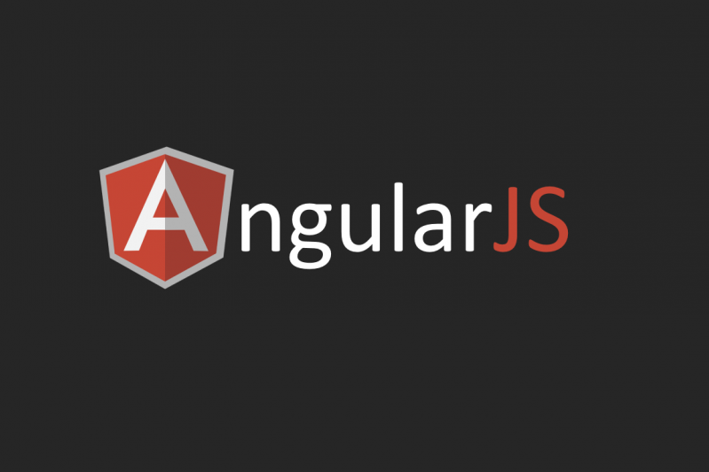
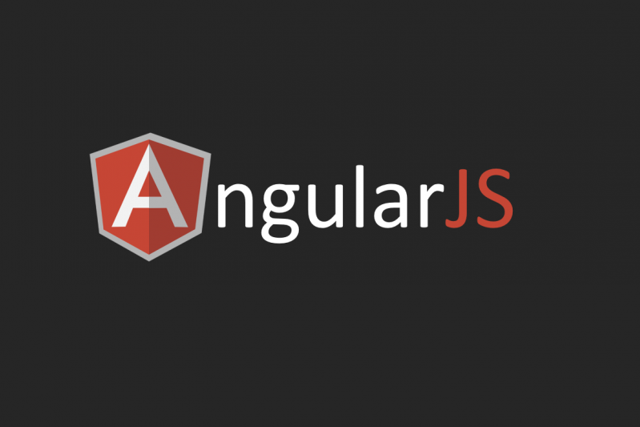
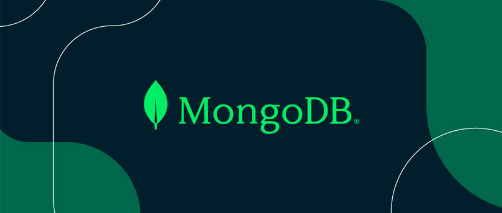
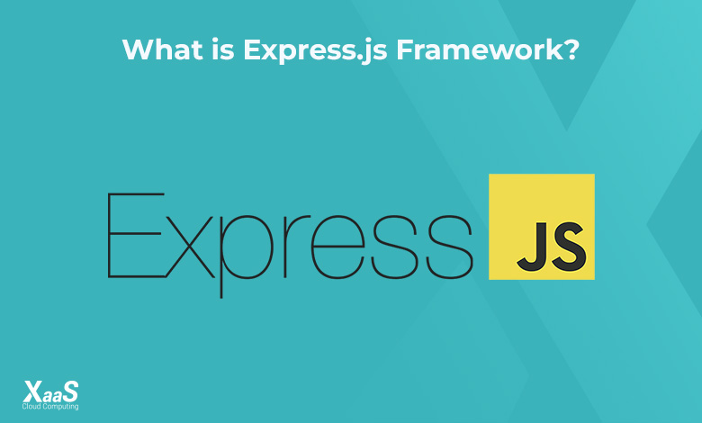
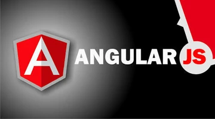
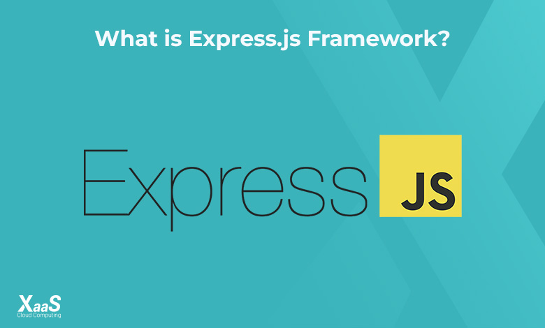
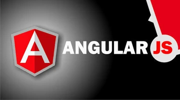

FULL STCK TECHNOLOGIES
FULL STACK:
Full stack refers to the process of developing both the front-end and back-end of an application or website.
FRONT-END
Front-End Development:
Front-end development involves creating the part of the website that users interact with directly. This includes designing the layout, styling, and interactive elements. Key technologies used in front-end development.

 



BACK-END
BACK-End Development:
Back-end development focuses on the server-side logic, database management, and application integration. It ensures that the front-end can communicate with the server and retrieve or store data as needed. Key technologies used in back-end development.


MERN
The MERN stack is a powerful combination of four technologies MongoDB, Express.js, React.js, and Node.js that work together to build modern, full-stack web applications. It enables developers to create applications using JavaScript for both the front-end and back-end, simplifying the development process.

MEAN
The MEAN stack is a collection of technologies MongoDB, Express.js, Angular, and Node.js used to develop modern, dynamic, and full-stack web applications. Like MERN, it is JavaScript-based, making it easy to use for both front-end and back-end development.
 




CONTACT US